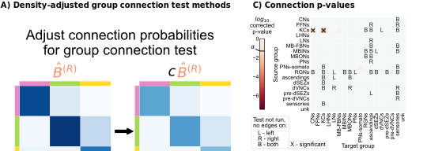

Density-adjusted group connection test
Density-adjusted group connection test¶
import datetime
import time
import matplotlib as mpl
import matplotlib.pyplot as plt
import numpy as np
import pandas as pd
import seaborn as sns
from graspologic.simulations import sbm
from pkg.io import glue as default_glue
from pkg.data import load_network_palette, load_node_palette, load_unmatched
from pkg.io import FIG_PATH, OUT_PATH, savefig
from pkg.perturb import remove_edges
from pkg.plot import (
SmartSVG,
draw_hypothesis_box,
heatmap_grouped,
networkplot_simple,
plot_pvalues,
set_theme,
)
from pkg.stats import stochastic_block_test
from svgutils.compose import Figure, Panel, Text
from tqdm import tqdm
DISPLAY_FIGS = False
FILENAME = "adjusted_sbm_unmatched_test"
OUT_PATH = OUT_PATH / FILENAME
FIG_PATH = FIG_PATH / FILENAME
def glue(name, var, **kwargs):
default_glue(name, var, FILENAME, **kwargs)
def gluefig(name, fig, **kwargs):
savefig(name, foldername=FILENAME, **kwargs)
glue(name, fig, figure=True)
if not DISPLAY_FIGS:
plt.close()
t0 = time.time()
set_theme()
rng = np.random.default_rng(8888)
network_palette, NETWORK_KEY = load_network_palette()
node_palette, NODE_KEY = load_node_palette()
neutral_color = sns.color_palette("Set2")[2]
GROUP_KEY = "simple_group"
left_adj, left_nodes = load_unmatched(side="left")
right_adj, right_nodes = load_unmatched(side="right")
left_labels = left_nodes[GROUP_KEY].values
right_labels = right_nodes[GROUP_KEY].values
np.random.seed(888888)
ns = [5, 6, 7]
B = np.array([[0.8, 0.2, 0.05], [0.05, 0.9, 0.2], [0.05, 0.05, 0.7]])
A1, labels = sbm(ns, B, directed=True, loops=False, return_labels=True)
node_data = pd.DataFrame(index=np.arange(A1.shape[0]))
node_data["labels"] = labels + 1
palette = dict(zip(np.unique(labels) + 1, sns.color_palette("Set2")[3:]))
fig, axs = plt.subplots(
2,
2,
figsize=(6, 5),
# constrained_layout=True,
gridspec_kw=dict(wspace=0.25, hspace=0, height_ratios=[2, 0.3]),
)
ytop = 1.05
ybottom = 0.11
xleft = 0.05
xright = 0.68
border_color = "lightgrey"
line1 = mpl.lines.Line2D(
(0.15, 0.95),
(0.4, 0.4),
transform=fig.transFigure,
color=border_color,
linewidth=1.5,
)
# fig.lines = (line1,)
ax = axs[0, 0]
_, _, misc = stochastic_block_test(A1, A1, node_data["labels"], node_data["labels"])
Bhat1 = misc["probabilities1"].values
top_ax, left_ax = heatmap_grouped(Bhat1, [1, 2, 3], palette=palette, ax=ax)
top_ax.set_title(r"$\hat{B}^{(R)}$", color=network_palette["Right"], size="large")
ax.set_title(
"Adjust connection probabilities\nfor group connection test",
fontsize="large",
x=1.1,
y=1.3,
)
ax = axs[0, 1]
Bhat1 = misc["probabilities1"].values
top_ax, left_ax = heatmap_grouped(0.6 * Bhat1, [1, 2, 3], palette=palette, ax=ax)
top_ax.set_title(
r"$\hat{B}^{(R)}$", color=network_palette["Right"], x=0.55, size="large"
)
top_ax.text(0.94, -1.2, r"$c$", size="large")
# ax.autoscale("off")
ax.annotate(
"",
xy=(0, 1.5),
xytext=(-0.9, 1.5),
arrowprops=dict(
arrowstyle="simple",
shrinkA=5,
shrinkB=10,
facecolor="black",
),
zorder=1,
clip_on=False,
)
from giskard.plot import merge_axes
ax = merge_axes(fig, axs, rows=1)
# ax.set_title("Run group\nconnection test", y=1.1, x=0.6, fontsize="small")
ax.axis("off")
ax.set(xlim=(0, 1), ylim=(0, 2))
draw_hypothesis_box("dasbm", 0.27, 2, ax=ax, yskip=1.2, ypad=0.03)
fig.set_facecolor("w")
gluefig("adjusted_methods_explain", fig)
fig, ax = plt.subplots(1, 1, figsize=(5, 4))
node_data = networkplot_simple(A1, node_data, palette=palette, ax=ax, group=True)
n_select = 10
row_inds, col_inds = np.nonzero(A1)
np.random.seed(8888)
choice_inds = np.random.choice(len(row_inds), size=n_select)
for i in choice_inds:
source_node = row_inds[i]
target_node = col_inds[i]
x1, y1 = node_data.loc[source_node, ["x", "y"]]
x2, y2 = node_data.loc[target_node, ["x", "y"]]
x = (x1 + x2) / 2
y = (y1 + y2) / 2
ax.text(
x,
y,
"x",
va="center",
ha="center",
color="darkred",
fontsize="medium",
zorder=2,
)
ax.set_title("Remove edges to\n match density (random)", fontsize="medium")
ax.set_ylabel(
"Right",
color=network_palette["Right"],
size="large",
rotation=0,
ha="right",
labelpad=10,
)
fig.set_facecolor("white")
gluefig("edge_removal_methods", fig)
n_edges_left = np.count_nonzero(left_adj)
n_edges_right = np.count_nonzero(right_adj)
n_left = left_adj.shape[0]
n_right = right_adj.shape[0]
density_left = n_edges_left / (n_left ** 2)
density_right = n_edges_right / (n_right ** 2)
n_remove = int((density_right - density_left) * (n_right ** 2))
glue("n_remove", n_remove)
rows = []
n_resamples = 500
glue("n_resamples", n_resamples)
RERUN_SIM = False
if RERUN_SIM:
for i in tqdm(range(n_resamples)):
subsampled_right_adj = remove_edges(
right_adj, effect_size=n_remove, random_seed=rng
)
stat, pvalue, misc = stochastic_block_test(
left_adj,
subsampled_right_adj,
labels1=left_labels,
labels2=right_labels,
)
rows.append(
{
"stat": stat,
"pvalue": pvalue,
"misc": misc,
"resample": i,
}
)
resample_results = pd.DataFrame(rows)
resample_results.to_csv(OUT_PATH / "resample_results.csv")
else:
resample_results = pd.read_csv(OUT_PATH / "resample_results.csv", index_col=0)
stat, pvalue, misc = stochastic_block_test(
left_adj,
right_adj,
labels1=left_labels,
labels2=right_labels,
method="fisher",
density_adjustment=True,
)
glue("pvalue", pvalue, form="pvalue")
print(pvalue)
print(f"{pvalue:.2g}")
0.0023293637600989513
0.0023
set_theme(font_scale=1.25)
fig, ax = plt.subplots(1, 1, figsize=(8, 6))
sns.histplot(
data=resample_results,
x="pvalue",
ax=ax,
color=neutral_color,
kde=True,
log_scale=True,
stat="density",
)
ax.set(xlabel="p-value", ylabel="", yticks=[])
ax.spines["left"].set_visible(False)
ax.axvline(0.05, linestyle=":", color="black")
ylim = ax.get_ylim()
ax.text(0.06, ylim[1] * 0.9, r"$\alpha = 0.05$")
median_resample_pvalue = np.median(resample_results["pvalue"])
colors = sns.color_palette("Set2")
color = colors[2]
ax.axvline(median_resample_pvalue, color=color, linewidth=3)
ax.text(
median_resample_pvalue - 0.0025,
ylim[1] * 0.9,
f"Median = {median_resample_pvalue:0.2g}",
color=color,
ha="right",
)
color = "darkred"
ax.axvline(pvalue, 0, 0.58, color=color, linewidth=3, linestyle="--")
ax.text(
pvalue - 0.0002,
ylim[1] * 0.48,
f"Analytic = {pvalue:0.2g}",
ha="right",
color=color,
)
gluefig("resampled_pvalues_distribution", fig)
fig, axs = plot_pvalues(misc)
gluefig("sbm_pvalues", fig)
fig, axs = plot_pvalues(misc, annot_missing=False)
gluefig("sbm_pvalues_unlabeled", fig)
fontsize = 10
methods = SmartSVG(FIG_PATH / "adjusted_methods_explain.svg")
methods.set_width(350)
methods.move(15, 35)
methods_panel = Panel(
methods,
Text(
"A) Density-adjusted group connection test methods",
0,
10,
size=fontsize,
weight="bold",
),
)
pvalues = SmartSVG(FIG_PATH / "sbm_pvalues.svg")
pvalues.set_width(250)
pvalues.move(0, 20)
pvalues_panel = Panel(
pvalues,
Text("C) Connection p-values", 5, 10, size=fontsize, weight="bold"),
)
pvalues_panel.move(methods.width * 0.9, 0)
fig = Figure(
(methods.width + pvalues.width) * 0.9,
(pvalues.height) * 0.9,
methods_panel,
pvalues_panel,
)
fig.save(FIG_PATH / "adjusted_sbm_composite.svg")
fig

methods = SmartSVG(FIG_PATH / "edge_removal_methods.svg")
methods.set_width(200)
methods.move(5, 15)
methods_panel = Panel(
methods,
Text(
"A) Random edge removal methods",
0,
10,
size=fontsize,
weight="bold",
),
)
distribution = SmartSVG(FIG_PATH / "resampled_pvalues_distribution.svg")
distribution.set_width(200)
distribution.move(10, 15)
distribution_panel = Panel(
distribution,
Text(
"B) Distribution of p-values from subsamples",
5,
10,
size=fontsize,
weight="bold",
),
)
distribution_panel.move(methods.width * 0.9, 0)
fig = Figure(
(methods.width + distribution.width) * 0.9,
(distribution.height) * 0.9,
methods_panel,
distribution_panel,
)
fig.save(FIG_PATH / "adjusted_sbm_random_composite.svg")
fig
elapsed = time.time() - t0
delta = datetime.timedelta(seconds=elapsed)
print(f"Script took {delta}")
print(f"Completed at {datetime.datetime.now()}")
Script took 0:00:12.017001
Completed at 2022-04-13 16:43:54.769808